Para llevar a cabo el proceso descrito en el párrafo anterior, autenticados en el equipo "SERVIDOR" con las credenciales del usuario "Administrador", ejecutaremos Inicio → Herramientas Administrativas → Administrador del servidor del equipo "SERVIDOR" Windows Server 2008, y una vez en ella nos situaremos sobre el apartado Funciones ubicado en la zona superior izquierda de la misma, para a continuación hacer clic sobre el enlace Agregar funciones ubicado en la zona derecha de dicha ventana.
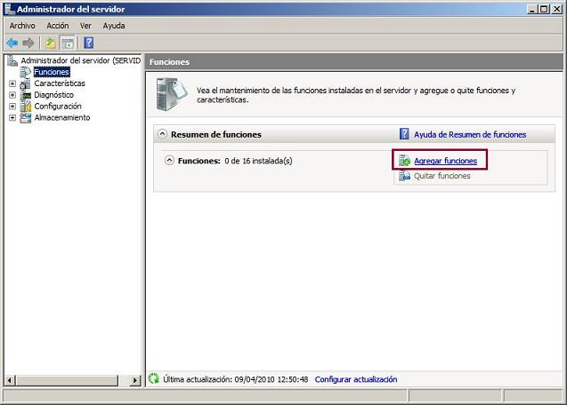
Como resultado de la acción anterior se nos presentará la primera ventana del asistente de agregación de funciones del servidor, en la que activaremos la casilla Omitir esta página de forma predeterminada, y tras ello pulsaremos sobre el botón Siguiente.
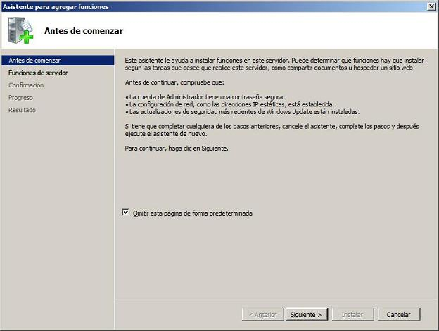
A continuación se mostrará la siguiente ventana, en donde se detallan las funciones que podrá realizar nuestro equipo "SERVIDOR", activando en nuestro caso la casilla Servicios de dominio de Active Directory para configurar como controlador de dominio este equipo Windows Server 2008, tras lo cual pulsaremos sobre el botón Siguiente.
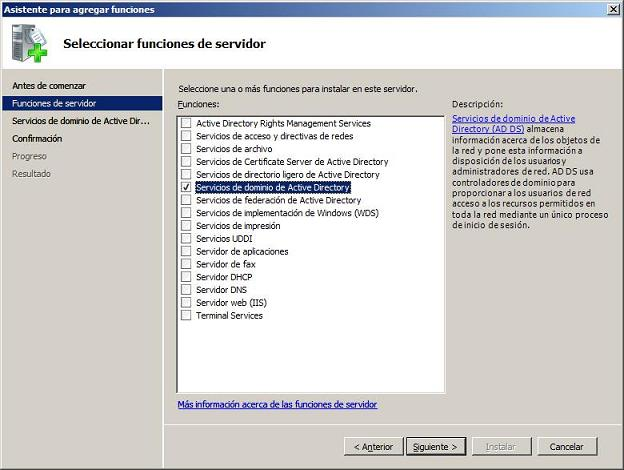
En la siguiente ventana se nos informa de las características de la función que estamos a punto de instalar, así como de los requisitos y configuraciones que precisamos para instalar el servicio correspondiente; en dicha ventana pulsaremos directamente sobre el botón Siguiente.
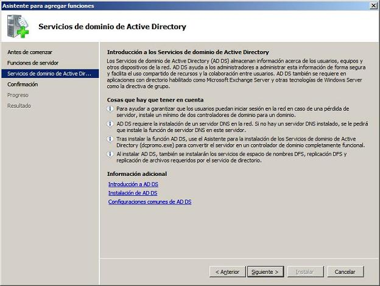
El asistente de instalación del servicio solicitado, nos informa de que está preparado para instalarlo con las configuraciones especificadas, así pues pulsaremos en dicha ventana sobre el botón Instalar para dar comienzo de modo efectivo al proceso de instalación.
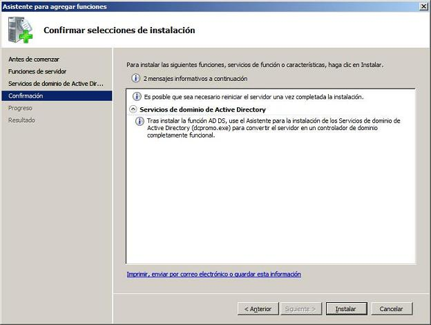
El proceso de instalación dará comienzo pues según lo previsto.
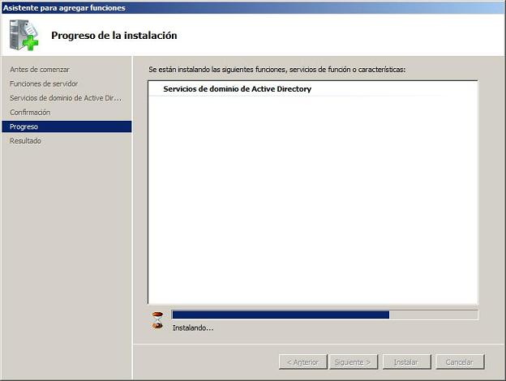
Una vez concluido el proceso de instalación del servicio de dominio de Active Directory, se nos informa de que dicho proceso se ha efectuado correctamente, y se nos comunica de que para completar la instalación y configurar el servicio instalado deberemos ejecutar el comando dcpromo.exe para promocionar el equipo "SERVIDOR" Windows Server 2008 a controlador de dominio; cerraremos el asistente de instalación pulsando sobre el botón Cerrar en la ventana de la imagen inferior.
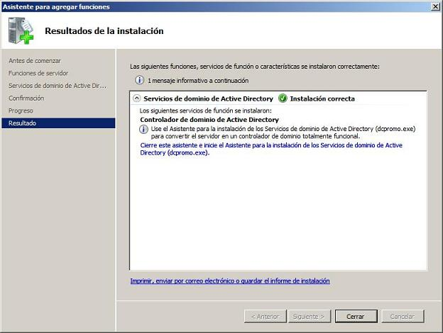
Llegados a este punto podremos dar por concluido este apartado, quedando aun pendiente la ejecución del comando dcpromo que llevaremos a cabo a continuación.
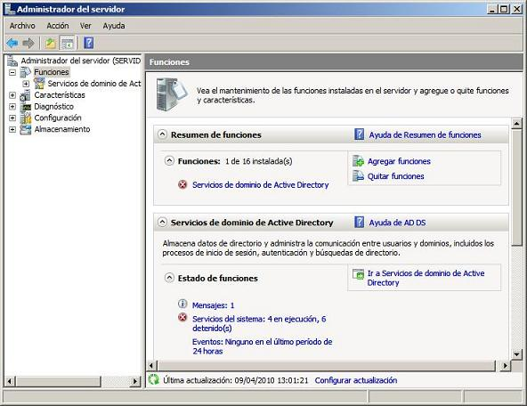
Así pues deberemos ir a Inicio, y tecleamos en la caja de texto de búsqueda el comando dcpromo, tal y como vemos en la ventana de la imagen inferior, y tras ello pulsamos sobre la tecla ENTER.
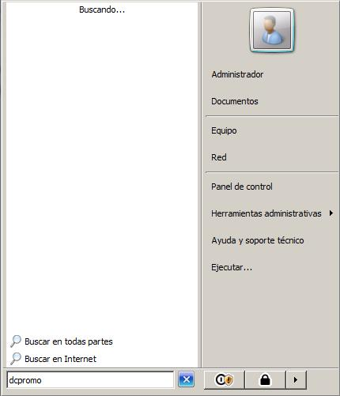
Como resultado de la acción anterior se ejecutará el asistente para la instalación de los servicios de dominio de Active Directory, en cuya primera ventana activaremos la casilla Usar la instalación en modo avanzado, tras lo cual pulsaremos sobre el botón Siguiente.
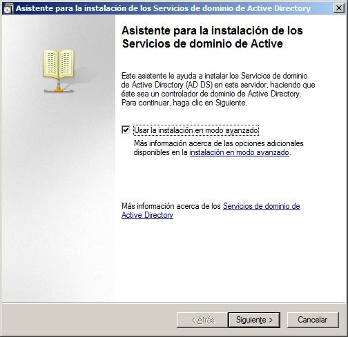
El asistente de instalación nos informará a continuación de los problemas de compatibilidad que pueden producirse si integramos este controlador de dominio con otros controladores de dominio que ya estuvieran instalados con versiones anteriores de servidores Windows; en nuestro caso obviaremos esta información, y pulsaremos directamente sobre el botón Siguiente en la ventana de la imagen inferior.
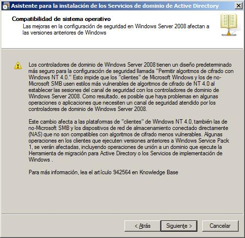
En la siguiente ventana deberemos indicar al asistente si el equipo "SERVIDOR" va a ser controlador de dominio de un bosque existente, o bien de un bosque nuevo, seleccionando en nuestro caso esta segunda opción al activar el radio botón Crear un dominio nuevo en un bosque nuevo, y tras ello pulsaremos sobre el botón Siguiente.
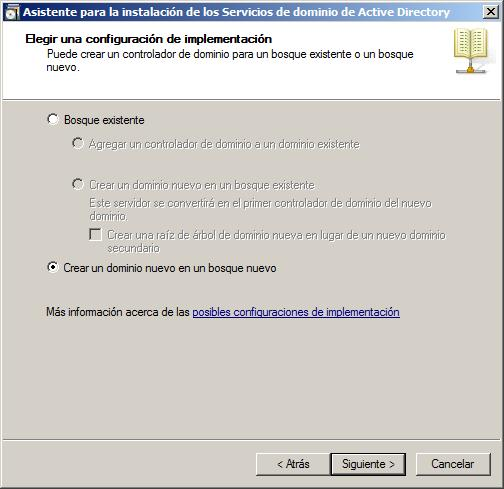
En la siguiente ventana indicaremos el nombre que deseemos asignar al dominio que gestionará el equipo "SERVIDOR"; si disponemos de un dominio registrado en Internet, podemos hacer uso del mismo, y si no fuera así, que será lo más habitual, indicaremos un nombre de dominio ficticio para nuestro centro, opción por la que hemos optado en este caso, especificando micentro.edu como nombre del dominio que controlará nuestro equipo "SERVIDOR".
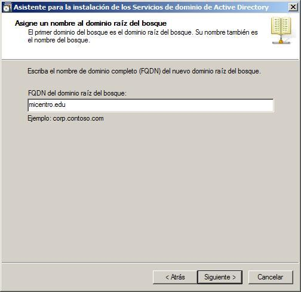
La siguiente ventana nos permite especificar un nombre NetBIOS para nuestro dominio, con el fin de que versiones anteriores de sistemas operativos Windows, como por ejemplo Windows 98, puedan hacer uso del dominio para, por ejemplo, poder identificar a usuarios desde dichos operativos; en nuestro caso dejaremos asociado el nombre de dominio NetBIOS ofrecido por defecto por el asistente, esto es MICENTRO, y pulsaremos directamente en dicha ventana sobre el botón Siguiente.
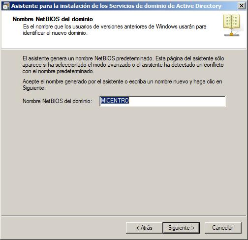
En la siguiente ventana debemos especificar si deseamos instalar este servicio con permisos compatibles con servidores anteriores de Windows (Windows 2003 Server o Windows 2000 Server) o no; en nuestro caso, y dado que no disponemos de ningún controlador de dominio instalado con ninguno de dichos sistemas operativos, en el desplegable "Nivel funcional del bosque" seleccionaremos Windows Server 2008, y tras ello pulsaremos sobre el botón Siguiente.
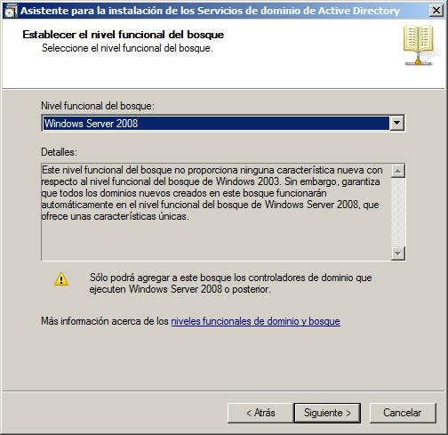
A
continuación el asistente de instalación nos informa de que debemos disponer de
un servidor DNS instalado para poder administrar el dominio "micentro.edu" que
va a ser gestionado por el equipo "SERVIDOR", ofreciéndonos la posibilidad de
instalarlo en este instante, cosa que debemos hacer, dejando marcada la opción correspondiente.
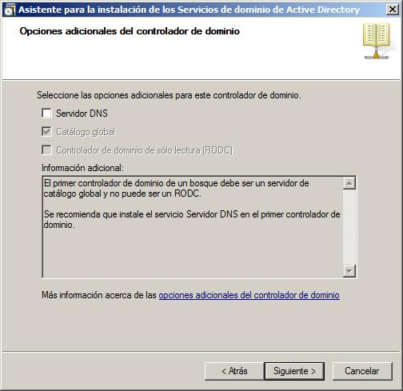
Posteriormente el asistente nos permitirá indicar la ruta donde será almacenada la base de datos, el registro de Active Directory y la copia del servidor de los archivos públicos del dominio, dejando en nuestro caso asociada la ruta que por defecto nos ofrece el asistente de instalación, y pulsando directamente en la ventana de la imagen inferior sobre el botón Siguiente.
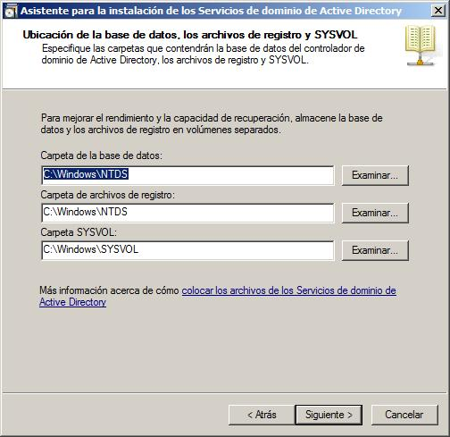
Posteriormente el asistente nos indica que debemos especificar una contraseña para poder acceder al equipo en modo Restauración de servicios de Active Directory, opción que ejecutaremos en su momento cuando tratemos el apartado relativo a restauración de las copias de seguridad del servidor; aunque podemos teclear la contraseña que deseemos, en nuestro caso indicaremos la misma contraseña que fue asociada al usuario "Administrador" del equipo "SERVIDOR", a fin de recordar una única contraseña para poder realizar toda la gestión de dicho equipo, tras lo cual pulsaremos sobre el botón Siguiente.
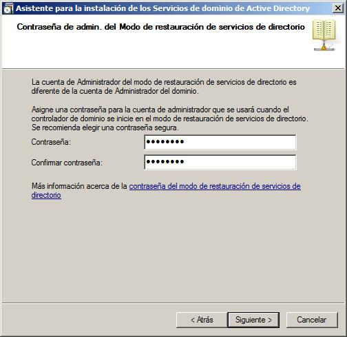
Como resumen final de las opciones indicadas, se muestra una ventana informativa con todos los parámetros seleccionados a través del asistente de instalación de Active Directory, en la cual pulsaremos sobre el botón Siguiente para dar comienzo efectivo a dicho proceso de instalación y configuración.
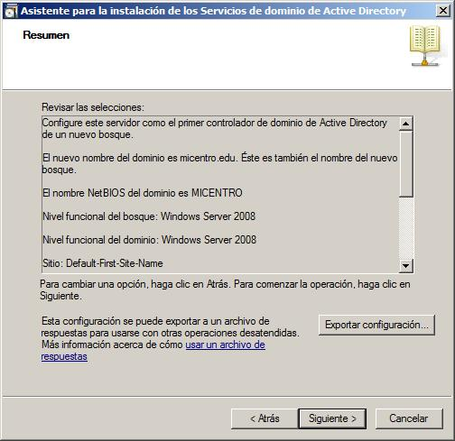
A partir de este momento dará comienzo la instalación y configuración de Active Directory en el equipo "SERVIDOR", tal y como vemos en la siguiente imagen; en dicha ventana activaremos la casilla Reiniciar al completar para que al completarse en su totalidad la instalación y configuración del servicio, el equipo se reinicie y el servicio pase a ser plenamente funcional.
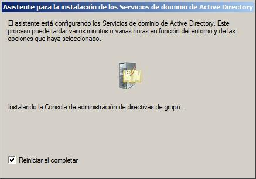
Tras el correspondiente reinicio, el equipo "SERVIDOR" pasará a realizar las funciones de controlador de dominio del dominio "micentro.edu"